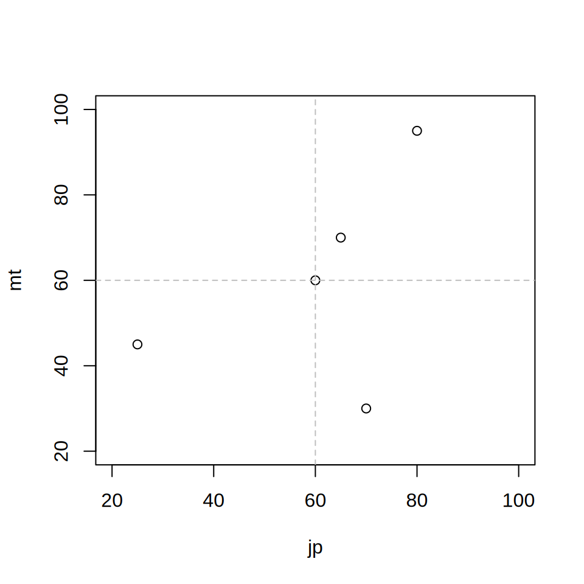
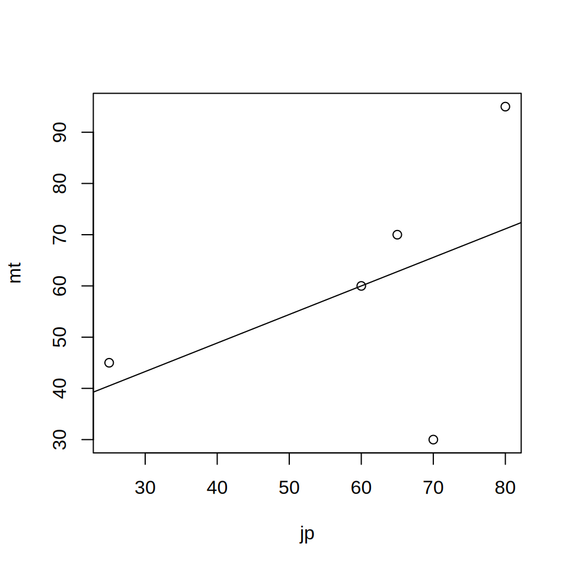

jp <- c(25, 70, 60, 65, 80)
mt <- c(45, 30, 60, 70, 95)
plot(jp, mt, xlim = c(20, 100), ylim = c(20, 100))
abline(v = mean(jp), col = "gray", lty = 2)
abline(h = mean(mt), col = "gray", lty = 2)

ここではLSAの分析で頻出する統計技法として， 相関係数と回帰分析を扱います。 基本的な考え方を説明するだけにとどめますので， 詳しいことは入門書や専門書を読んで勉強してください。
二つの量的変数1の関連性を知りたいときに， 相関係数という，量的変数同士の直線的な関連の強さを示す指標を使うことがあります。 相関係数\(r\)は，次の式で求められます。
\[r = \frac{\frac{1}{n}\sum_{i=1}^n(x_i - \bar{x})(y_i - \bar{y})} {\sqrt{\frac{1}{n}\sum_{i=1}^n(x_i - \bar{x})^2}\sqrt{\frac{1}{n}\sum_{i=1}^n(y_i - \bar{y})^2}}\]
今，図 7.1 のような国語の成績と数学の成績を考えましょう。 簡単のため，平均はいずれも60点とします。
jp <- c(25, 70, 60, 65, 80)
mt <- c(45, 30, 60, 70, 95)
plot(jp, mt, xlim = c(20, 100), ylim = c(20, 100))
abline(v = mean(jp), col = "gray", lty = 2)
abline(h = mean(mt), col = "gray", lty = 2)図 7.1 を見ると，2人目（国語70点，数学30点）を除けば， 国語の成績と数学の成績には直線関係があります。 この直線関係の強さを，一つの数字で表現することを考えます。 具体的な手順は，以下のとおりです。
まず，国語と数学の個々の点数から平均を引きます。 その上で，国語と数学の点数を掛け合わせます。 Rで表現すると，次のようになります。
jp - mean(jp)[1] -35 10 0 5 20mt - mean(mt)[1] -15 -30 0 10 35(jp - mean(jp)) * (mt - mean(mt))[1] 525 -300 0 50 700ここで，(jp - mean(jp)) * (mt - mean(mt))の値は， 「国語も数学も平均より低い人（1番目）」あるいは「国語も数学も平均より高い人（4番目・5番目）」はプラスになります。 他方， 「国語か数学の一方は平均より高いが，もう一方は平均より低い人（2番目）」はマイナスになります。 いずれも平均と同じ人（3番目）は0です。
ここで，(jp - mean(jp)) * (mt - mean(mt))の合計値を考えると， 国語と数学のあいだに関連がある場合（国語が高い人は数学も高い， あるいは逆に国語が高い人は数学が低い）は， (jp - mean(jp)) * (mt - mean(mt))の値がプラス（またはマイナス）に偏る人が多くなりますので， 合計値は大きくプラス（あるいはマイナス）になります。 国語と数学のあいだに関連がない場合，プラスの人とマイナスの人のいずれもが現れますので， (jp - mean(jp)) * (mt - mean(mt))の合計値はゼロに近づきます。
ただ，このままだと人数が増えれば増えるほど， あるいは単位が大きくなればなるほど極端な値が生じる可能性がありますので， 合計値を人数と単位で割って調整する必要があります。 これが分子の\(\frac{1}{n}\)と相関係数の分母の意味です （よく見ると分母は，\(x\)と\(y\)の標準偏差の積になっています）。
Rで計算すると，次のようになります。 なお，標準偏差には\(n\)で割る場合と\(n-1\)で割る場合がありますが， 相関係数の場合，いずれを採用しても同じ（分母と分子に\(n\)または\(n-1\)が含まれるので， 割ると両者が消えてしまう）になります。 ここでは簡単のためRのsd関数を使うので，分子を\(n-1\)で割っています。
# 分子
cov_num <- sum((jp - mean(jp)) * (mt - mean(mt))) / (length(jp) - 1)
# 分母
cov_den <- sd(jp) * sd(mt)
# 相関係数
cov_num / cov_den[1] 0.4708717なお，Rには相関係数を出力する関数corがありますので， こちらを使えば容易に相関係数が出力されます。
cor(jp, mt)[1] 0.47087170.47という相関係数がどの程度かわからないという人も多いでしょう。 ここでは参考までに，\(x\)と\(y\)の相関係数が0.9・0.5・0.2・-0.2・-0.5・-0.9のそれぞれで， データの分布がどう変わるか示した 図 7.2 を載せておきます2。 相関係数が0.9や-0.9だと\(x\)が高いと\(y\)も高い（あるいは\(x\)が高いと\(y\)が低い）と言えますが， 0.5や-0.5程度だと「まあ関係あるかな？」といった程度です。 0.2や-0.2となるとほとんど関係は見いだせません。
# 相関係数
corrs <- c(0.9, 0.5, 0.2, -0.2, -0.5, -0.9)
# 平均と標準偏差
means <- c(60, 60)
sds <- c(10, 10)
n <- 100 # サンプルサイズ
# レイアウト設定
par(mfrow = c(3, 2)) # 3行2列のレイアウト
for (r in corrs) {
# 共分散行列
covm <- matrix(c(
sds[1]^2, r * sds[1] * sds[2],
r * sds[1] * sds[2], sds[2]^2
), nrow = 2)
# データ生成
set.seed(1234) # 再現性を確保
data <- MASS::mvrnorm(n = n, mu = means, Sigma = covm)
# プロット
plot(data[, 1], data[, 2],
main = paste("相関係数: ", r),
xlab = "X", ylab = "Y", col = "blue", pch = 19,
xlim = c(means[1] - 4 * sds[1], means[1] + 4 * sds[1]),
ylim = c(means[2] - 4 * sds[2], means[2] + 4 * sds[2])
)
}ちなみにPISA2012のデータを使い， 読解リテラシーと数学リテラシーの相関係数 を計算すると次のようになります。
url <- "https://raw.githubusercontent.com/kawa5902/LSAdata/refs/heads/main/pisa2012stuJPN.csv"
jpn2012 <- read.csv(url)
cor(jpn2012$PV1READ, jpn2012$PV1MATH)[1] 0.8665053相関係数は0.867ですので，読解リテラシーが高い人は数学リテラシーも高い傾向があり， しかもそれはかなりはっきりした傾向であると言って良さそうです。
教育研究では，学力\(y\)と何らかの要因\(x\)のあいだに 直線の関係があると仮定して， \(x\)が1変化したときの\(y\)の変化量（ここでは\(\beta_1\)とします）を 求めたいということがあります。 式でいうと，以下のような状態です。
\[y = \beta_0 + \beta_1 x + \epsilon\]
ここで，\(\beta_1\)と\(\beta_0\)の値を求める分析法を， 回帰分析（regression analysis）といいます。 一般に\(\beta_1\)は回帰係数，\(\beta_0\)は切片と呼ばれます。 もちろん個々人の成績を完璧に予測することはできませんので， 一人ひとりの得点には式からのズレ（誤差）が生じます。 これが，\(\epsilon\)の項（誤差項）です。 また，\(y\)を被説明変数（従属変数），\(x\)を説明変数（独立変数）と呼ぶことがあります。 とくに， \(y = \beta_0 + \beta_1 x + \epsilon\)のような 説明変数が1つだけのモデルを，単回帰分析と呼びます。
回帰分析の何が嬉しいかというと， 仮に勉強時間（\(x\)）と学力（\(y\)）のあいだに \(y=10 + 1.5x\)という関連があるなら， 勉強時間を1時間伸ばせば成績が1.5点上がる効果が期待できる といった主張が可能になる点です。 勉強時間以外にも，保護者が大卒（\(x=1\)）と保護者が非大卒（\(x=0\)）の場合に， 学力（\(y\)）との関連を検討し\(y=50 + 10x\)という関係が見られたなら， 保護者が大卒かどうかで学力に10点の差があるといった分析も可能になります。
\(\beta_0\)，\(\beta_1\)の計算方法はやや面倒なので省略します。 理屈としては，個々のデータ\(y_i\)と\(\beta_0 x + \beta_1\)で予測される値の差が 最小になるような\(\beta_0\)，\(\beta_1\)を求めるということになります。 これは，\(\sum_{i=1}^n(y_i - (\beta_0 + \beta_1 x_i))^2\)を最小にする \(\beta_0\)，\(\beta_1\)を求めることと同義です。 これを最小2乗法と呼びます。 回帰分析の係数の求め方は他にもありますが，とりあえずは 最小2乗法の理屈を知っておけば十分です。
Rでは，lm関数で回帰分析を行うことができます。 先ほどの国語と数学の5人のデータに，回帰分析を行ってみましょう。
m1 <- lm(mt ~ jp)
print(m1)
Call:
lm(formula = mt ~ jp)
Coefficients:
(Intercept) jp
26.5714 0.5571 plot(jp, mt)
abline(m1)
Rの出力のうち，Interceptが切片（\(\beta_0\)），jpが国語の回帰係数（\(\beta_1\)）を 示しています。それぞれ26.6と0.56ですので，国語と数学の成績のあいだに \(数学の点数=26.6 + 0.56 \times 国語の点数\)という関係があることになります。 国語の点数が60点だったら，数学の点数は\(26.6 + 0.56\times60 = 60.2\)なので， だいたい60点くらいになるということです。
続いて実際のデータに回帰分析を適用してみます。 ここでは，PISA2012の日本の読解リテラシーと ESCSの関係を見てみましょう。
jpn2012$ESCS[jpn2012$ESCS == 9999] <- NA # 欠測の処理
m2 <- lm(jpn2012$PV1READ ~ jpn2012$ESCS)
m2
Call:
lm(formula = jpn2012$PV1READ ~ jpn2012$ESCS)
Coefficients:
(Intercept) jpn2012$ESCS
543.86 39.94 plot(jpn2012$ESCS, jpn2012$PV1READ, xlab = "ESCS", ylab = "PV1READ")
abline(m2, col = "red", lwd = 2)lm関数の出力を見るとjpn2012$ESCSの係数は39.94ですから， ESCSが1単位変化すると39.9ポイント読解リテラシーが変化することがわかります。 ESCSは子どもの家庭背景を示す指標ですから， 家庭背景が恵まれている子の方が読解リテラシーが高いということです。
もっともこれは，直線関係を仮定すると読解リテラシーとESCSの あいだに関係が見えるということに過ぎません。 図を描いてみるとわかるのですが，ESCSが高くても成績の低い生徒はいますし， 逆にESCSが低くても成績の高い子もいます（図 7.3）。 PISA2012のデータから読み溶ける読解リテラシーとESCSの関係は， 「ESCSが高い子はすべて読解リテラシーが高い」といった絶対的なものではなく， あくまで「ESCSが高い子の方が読解リテラシーが高い傾向にある」というレベルに留まっているのです。 ですから回帰分析をした際は，数値を解釈するだけでなくplotなどを使って 変数間の関連を図で把握することを心がけるようにしましょう。
回帰分析の係数についても，標準誤差を出力することが可能です。 Rでは，summary関数を使うことで標準誤差が出力されます。
summary(m2)
Call:
lm(formula = jpn2012$PV1READ ~ jpn2012$ESCS)
Residuals:
Min 1Q Median 3Q Max
-367.33 -59.40 5.58 64.92 363.74
Coefficients:
Estimate Std. Error t value Pr(>|t|)
(Intercept) 543.863 1.190 456.92 <2e-16 ***
jpn2012$ESCS 39.944 1.658 24.09 <2e-16 ***
---
Signif. codes: 0 '***' 0.001 '**' 0.01 '*' 0.05 '.' 0.1 ' ' 1
Residual standard error: 93.07 on 6183 degrees of freedom
(166 observations deleted due to missingness)
Multiple R-squared: 0.08577, Adjusted R-squared: 0.08562
F-statistic: 580.1 on 1 and 6183 DF, p-value: < 2.2e-16いろいろ出力があって見づらいですが，Std. Errorの列が標準誤差です。 この場合，切片（Intercept）の推定値が543.863・標準誤差が1.190， ESCSの回帰係数（jpn2012$ESCS）の推定値が39.944・標準誤差が1.658ということになります。
回帰分析の係数の標準誤差の解釈は，平均値の標準誤差とほぼ同じです。 つまり母集団において回帰分析を行うと， 切片の値は543.863±2×1.190， ESCSの回帰係数の値は39.944±2×1.658のどこかにある（と信じましょう）ということになります。
特にESCSの回帰係数は重要で，最低でも39.944 - 2×1.658 ≒ 36.6ですから， 低めに見積もっても「ESCSが1単位増えると読解リテラシーの得点が36.6点高まる」と考えられると いうことになります。 データフレームの確認3で見たように， ESCSはだいたい2から-2程度の値を取る数値でした。 ということは，ESCSが高い子どもと低い子どもでは，4×36.6≒146で100ポイントを超える差が つくということになります。 これを大きいと見るかどうかは人によるでしょうが， 少なくとも学力と家庭環境の関連を数値化して議論できるという点で， 回帰分析は重要な分析技法と言えるでしょう。 なお，ここで行った分析は標準誤差を小さく見積もりすぎています。 より適切な標準誤差を得るための方法については， Replication Methodの章を読むようにしてください。
単回帰分析は説明変数が一つだけでしたが， 学力に影響を及ぼす要因は一つだけとはかぎりません。 こうした複数の説明変数を同時に考慮したい場合に利用される方法が， 重回帰分析です。 たとえば3個の説明変数を持つ重回帰分析は， 次の式で表されます （なお，\(x\)の係数である\(\beta_1\)や\(\beta_2\)は偏回帰係数と呼ばれます）。
\[y = \beta_0 + \beta_1x_1 + \beta_2x_2 + \beta_3x_3 + \epsilon\]
単回帰分析と違い，重回帰分析の偏回帰係数の解釈は面倒です。 今，被説明変数を学力（\(y\)）とし， 説明変数を保護者の学歴（\(x_1\)：保護者が大卒のとき1・非大卒のとき0）， 勉強時間（\(x_2\)：単位は時間）としましょう。 分析の結果，\(y=50 + 10x_1 + 5x_2\)という関連があったとします。 このとき\(x_2\)の偏回帰係数の解釈は， 「勉強時間（\(x_2\)）が1時間増えると学力（\(y\)）が5上がる」ではありません。 \(x_2\)以外に保護者の学歴（\(x_1\)）が存在しますので， 「保護者の学歴が大卒（\(x_1=1\)）の人同士を比べると，勉強時間（\(x_2\)）が1時間増えると学力（\(y\)）が5上がる」 ，あるいは 「保護者の学歴が非大卒（\(x_1=0\)）の人同士を比べると，勉強時間（\(x_2\)）が1時間増えると学力（\(y\)）が5上がる」になります。 前半は似たようなことを言っていますから，まとめて 「保護者の学歴が同じ人同士を比べると，勉強時間（\(x_2\)）が1時間増えると学力（\(y\)）が5上がる」でよいでしょう。 要するに重回帰分析における\(x_1\)の偏回帰係数\(\beta_1\)は， 「\(x_1\)以外の説明変数（\(x_2\)や\(x_3\)）が同じ対象を比較したときに，\(x_1\)が1単位変化したときの\(y\)の変化量」になります。
重回帰分析の利点は，「よく似たものを比べる」ことを可能にしてくれる点です。 この意義を，PISA2012のデータを使い「ひとり親家庭の低学力問題」を例に考えてみましょう。 PISA2012では，調査対象になった子どもに「一緒に住んでいる人」を尋ねています。 ここで子どもが，「お父さん」あるいは「お母さん」のみと一緒に暮らしていると回答した場合， その子は「ひとり親」であると判定できます。 PISA2012のデータセットでは，FAMSTRUCという変数に子どもの回答結果が格納されています。 このデータを使って，ひとり親家庭とそうでない家庭の学力を考えてみましょう。
最初にFAMSTRUC変数から，「ひとり親家庭」と「それ以外の家庭」を示す変数を作ります。 FAMSTRUC変数には4つの値があり，1がひとり親（お父さん，あるいはお母さんとのみ住んでいる）， 2が二人親（お父さん・お母さんと住んでいる），3がそれ以外，9が欠測となっています。 ここでは分析のために，ひとり親を1・それ以外を2とするsingleという新しい変数を作成します。 また，欠測はNAに変換します3。
# table関数でFAMSTURCの度数分布を表示
table(jpn2012$FAMSTRUC)
1 2 3 9
740 5269 58 284 # single変数を作成
jpn2012$single <- jpn2012$FAMSTRUC
jpn2012$single[jpn2012$single == 1] <- 1
jpn2012$single[jpn2012$single %in% c(2, 3)] <- 0
jpn2012$single[jpn2012$single == 9] <- NA
# single変数の度数分布
table(jpn2012$single)
0 1
5327 740 prop.table(table(jpn2012$single))
0 1
0.8780287 0.1219713 標本の約12%が「ひとり親」と判定されるという結果になりました。
それでは新しく作ったsingle変数を使い，回帰分析をしてみましょう。 最初に単回帰分析を行います。 式にすると，\(PV1READ = \beta_0 + \beta_1 single\)ということです。
lm(jpn2012$PV1READ ~ jpn2012$single)
Call:
lm(formula = jpn2012$PV1READ ~ jpn2012$single)
Coefficients:
(Intercept) jpn2012$single
545.83 -30.52 jpn2012$singleの値が-30.5なので， 「ひとり親」の子どもと「それ以外」の子どもの読解リテラシーには， 約30ポイントの差があることがわかります。 係数がマイナスですから，「ひとり親」（\(x=1\)）の方が読解リテラシーが低いということです。
これは重要な発見ですが，ここで考えたいことは， 「ひとり親」と「それ以外」の家庭では，そもそも家庭の経済状態などに差があるのではないかということです。 実際，家庭の状況を示すESCS変数を「ひとり親」と「それ以外」で見てみると， 前者のほうが低い傾向があります。
tapply(jpn2012$ESCS, jpn2012$single, summary)$`0`
Min. 1st Qu. Median Mean 3rd Qu. Max. NA's
-2.35000 -0.55000 -0.01000 -0.01012 0.55000 2.04000 52
$`1`
Min. 1st Qu. Median Mean 3rd Qu. Max. NA's
-2.1600 -0.9700 -0.5500 -0.4844 0.0300 1.2600 11 ひとり親とESCSの関係を踏まえると，「ひとり親」の方が経済的に課題を抱えやすい世帯が多いと思われますから， 単純に「ひとり親」と「それ以外」を比べると， 「経済状態などによる不利」と「ひとり親家庭であることによる不利」の両方の影響を捉えていることになります。 「経済状態などによる不利」の影響は除いたうえで，「ひとり親家庭であることによる不利」を捉えるには どうすればいいのでしょうか。
ここで使われるのが重回帰分析です。 すでに指摘したように重回帰分析を使うと，「同じような人同士」を比べることが可能になるのでした。 つまり，\(PV1READ = \beta_0 + \beta_1 single + \beta_2 ESCS\)として推定すれば， 「ESCSが同じ人同士でPV1READを比べたときに， ひとり親家庭とそうでない家庭でどの程度PV1READが違うのか」を調べることができます。
lm(jpn2012$PV1READ ~ jpn2012$single + jpn2012$ESCS)
Call:
lm(formula = jpn2012$PV1READ ~ jpn2012$single + jpn2012$ESCS)
Coefficients:
(Intercept) jpn2012$single jpn2012$ESCS
546.84 -12.96 37.85 jpn2012$singleの偏回帰係数は，-12.96になっています。 これは，「ESCSが同じ人同士で比べると，ひとり親家庭のほうが読解リテラシーが13ポイント低い」という意味になります。 単回帰分析ではjpn2012$singleの係数は-30.52でしたから，だいぶ値が小さくなっていることになります。 ESCSが同じ人同士で比べたことにより，「経済状態などによる不利」は除いたうえで， 「ひとり親家庭であることによる不利」を捉えることができたと考えられます。
回帰分析の係数を解釈するうえで注意してほしいことに， 「（偏）回帰係数は因果関係を示すとは限らない」というものがあります。 たとえば先ほど，ひとり親家庭のほうが読解リテラシーの点数が30ポイントほど低いという話をしました。 これは単に， 「「ひとり親」の子どもと「それ以外」の子どもを集めてきて 平均点を比べると，前者が後者より30ポイント低かった」ということに過ぎません。 「「ひとり親」になると成績が30ポイント下がる」という意味ではありませんので注意してください。
なお，より精緻な分析を行えば回帰分析から「ひとり親家庭になると成績が◯ポイント下がる」といった 主張を導くことも可能です4。 ただしその場合でも，その結果はあくまで「ひとり親家庭になった子どもを集めてくると成績が◯ポイント下がる傾向がある」 ということを意味するに過ぎません。 「ひとり親家庭になった子どもは一人残らず成績が下がる」といった強い主張をすることは， （少なくとも現時点では）ほぼ不可能に近いということは覚えておいた方がよいでしょう。